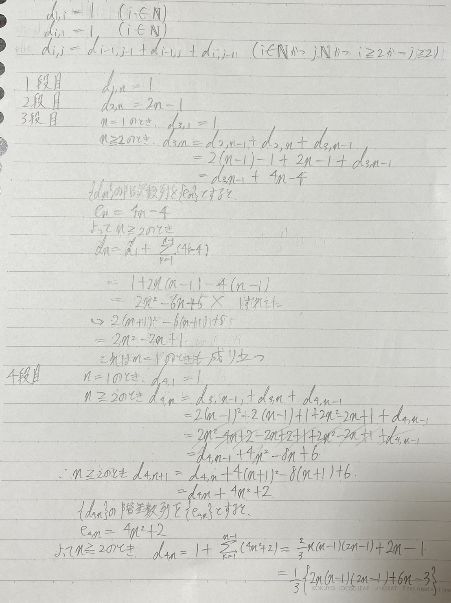
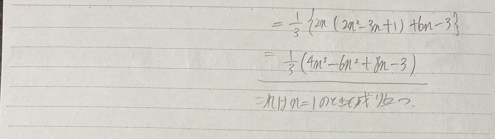
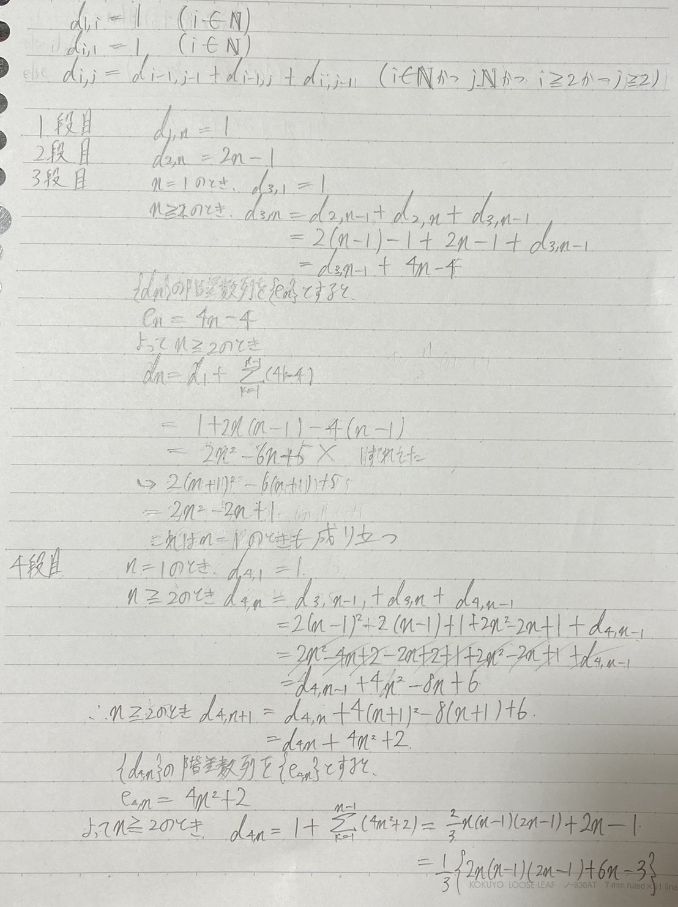
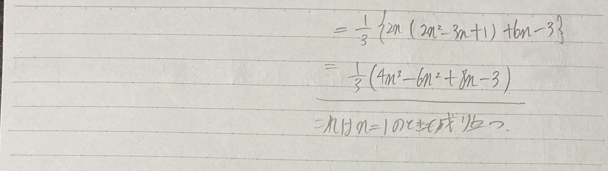

最近PUZZLEGRAMSという本を読んでいます。
この問題は、右、左上、左のマスを足した63が答えなのですが、他の点についてはどのように求まるのかと思い深夜テンション計算してみました。
 これで本が改訂されて点の位置が変わっても安心ですね！
(久々に数列の計算をしたらやり方を結構忘れていた...)
引用 : PUZZLEGRAMS p.34
最近PUZZLEGRAMSという本を読んでいます。
この問題は、右、左上、左のマスを足した63が答えなのですが、他の点についてはどのように求まるのかと思い深夜テンション計算してみました。
 (久々に数列の計算をしたらやり方を結構忘れていた...)
引用 : PUZZLEGRAMS p.34